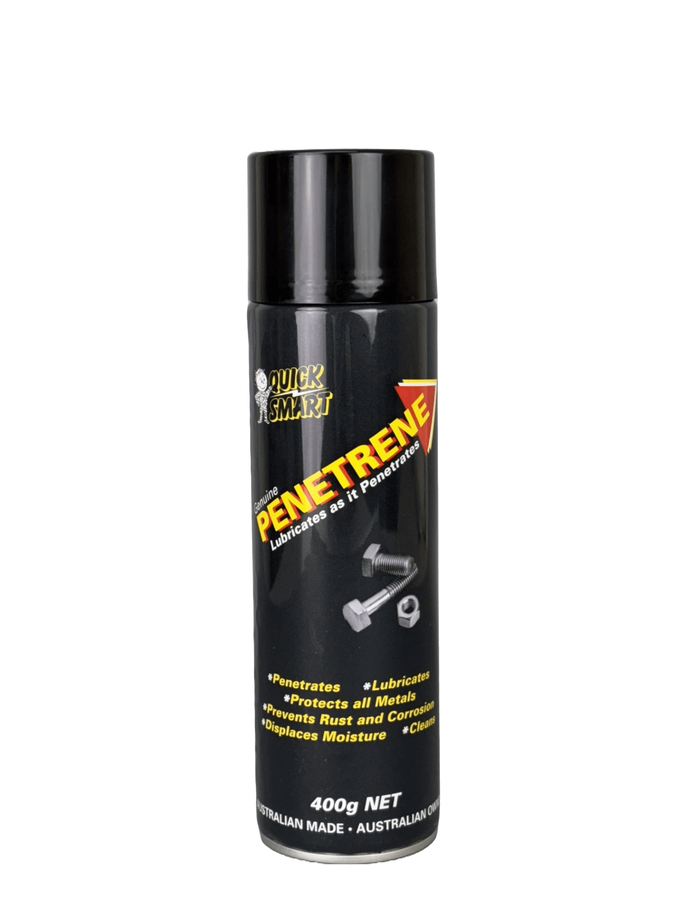

Available Today
One Formula.
Every Format.

400g Aerosol
Precision spray for automotive, electrical, and overhead applications. The trade workshop staple.

250mL & 500mL
Classic squeeze bottle format. Direct application to fasteners, hinges, and seized components.

1L – 5L
Workshop and farm supply format. Economical for high-frequency use across multiple sites and equipment.

20L – 200L
Industrial bulk supply for mine sites, large agricultural operations, and fleet maintenance programs.